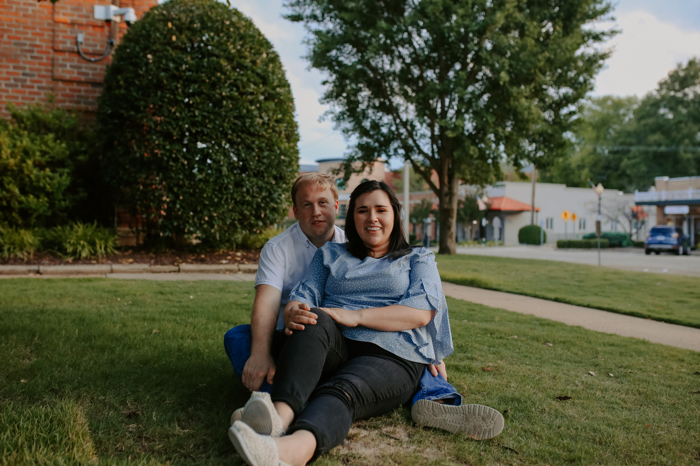

Hello, we are Jonathan and Raquel Worden. We both strive to serve the Lord. Jonathan currently works as a Sales Manager for the Hilton Memphis and I am an Administrative Assistant for a commercial real estate agent here in Mississippi where we live. We are so grateful that you have given us your time to get to know our story. We cannot fully comprehend what it is that you are dealing with, all of the difficult thoughts and hard questions to answer. We can’t even start to understand the amount of strength it takes to even be open to a decision like this and we thank God for your love for your sweet baby and your courage. If there is one thing we know its that no matter the challenge, no matter the sorrow- God is still good and He sees you. He sees your hurt, He sees your pain, and He knows every detail of who you are and who your baby is. We hope you will take the time to read on and know just how much we understand this heartache. We want to give you the space to process all of the complexities that you are dealing with right now and we pray that we have a chance to meet you, but until then, we hope this profile allows you to meet us a little.

 Love at first sight always seemed like a cliche in my eyes. I had a troubled past with a lot of poor attempts at love and experienced some abuse. I felt like used goods in a lot of ways and really just wanted to grow in my walk with the Lord, the One that wouldn’t hurt me and was always there for me. The Lord gave me wonderful friends that became like family to me at my church. He used the worship ministry to help me have a way to express all that hurt even when I didn’t have the words. A dear friend of mine named Ashton was one of those in the worship ministry and he felt God leading him to be a worship pastor in South Dakota. With my beet red face and sobs, I went to Ashton’s house, gave him a few gifts and a hug and told him I was glad for him. Then I got in my little yellow bug and drove away. Little did I know, that was the first time Jonathan saw me.
A few days later I got a friend request from a mutual friend that knew Ashton. Then that following Sunday, that same face came walking up the stage. He told me his name was Jonathan and he asked me if I’d like to sit with him during service. I said yes and afterwards I waited around wondering if he was going to talk to me about something but he did not and that was that. We said our goodbyes and went on our way. I had been frustrated that morning with something and was praying on the way home and the Lord kept bringing that blonde haired boy to my mind. So I said, “Okay Lord, I will message him.” I thought maybe he had a sick family member and needed prayer so I sent him a message. About an hour later I found myself on a date.
We went to the park with some of his friends and had a somewhat weird beginning to the date. Knowing that it probably wasn’t going well he asked me for ice cream - the true way to my heart! We didn’t leave that second slot in the Sonic drive thru until six hours later. We laughed and joked and I took my shoes off and can you believe I didn’t even finish my milkshake (well, I did on the way home). To my surprise, he was kind and excited to get to know me. As he walked me back to my car I told him maybe we should do this again. He then looked me right in the eyes and said, “Well yes, because I am going to marry you someday.”
So my little plan of no more boys had quite the wrench thrown in it. We started to court one another officially in April of 2014. With a six year difference, our age gap led to a few concerns and challenges for us. But we just kept growing together and did our best to allow God to bind our relationship. In 2016 on my first Thanksgiving college break, he knelt down in front of all of our parents in my parents living room. By March of 2018, we were married and we have continued to grow together ever since - that same hesitant girl and that same starry eyed boy.
Not long after we were married our concerns of infertility were confirmed. I never had the average womanly systems and knew we might have problems but we both knew adoption would be an exciting adventure and were ready to travel whatever road God had for us. Even still, we could not have been prepared for what was to come. The doctors weren’t sure what was wrong in the beginning and it led to numerous visits and procedures and they finally found that I had some abnormal anatomy, endometriosis, and severe PCOS. We were told we would have to undergo ten major surgeries to even get to a healthy point. So we prayed, saved up, and prepared to undergo the first. Can you believe that they were able to correct the major issues in ONE SURGERY! We couldn’t believe we were done with that part but then we had to move directly into fertility treatments since my anatomy would be in the best state right after the surgery. It was quite the whirlwind. Here we are barely married a year and already having to undergo multiple treatments.
They all failed and through the clouds of all that grief we had clarity about one thing - this was just a chapter and adoption is more and more our exciting hope. Then they told us we only had one more chance through IVF which would cost a lot of money, may not work, and there is a high probability that I myself could not survive a pregnancy not to mention a low chance that a baby could survive. So we knew. God had placed adoption on our hearts from the beginning and now we knew. We then took time to mourn the loss of my womb and draw near to one another through the grief. We strove to give one another time to grieve as we still do today. It is hard to encapsulate all of the sorrow these four almost five years have had. The pain of feeling alone, the sting of being alienated by well-intentioned people who just don’t know how to handle the messiness. The difficulty of trying to be joyful for others who are moving on with their lives.
But please know this, through all of those heartaches came strength, unity, togetherness and came humility. We have both been challenged to let go of destructive traits that we wouldn’t have seen if the Lord hadn’t led us through infertility. He continues to grow us and comfort us and give us a hope that parents or not parents, He has a plan for our lives and He is a good, good Father. And now here we are talking to you. We have prayed for this opportunity for so long and we are so grateful for the ways in which the Lord has patiently prepared us for this chapter. We still have so much to learn and are so thankful you’ve taken the time to get to know us as we know so very deeply how precious life is.